19 · جنگ و صلح20 · مادام بوواری21 · بادبادکباز22 · هزار خورشید تابان23 · و کوهستان طنین انداخت24 · کتابخانه نیمهشب25 · مردی به نام اوه26 · بریتماری اینجا بود27 · مادربزرگ سلام رساند و گفت متأسف است28 · زندگی در پیش رو29 · من پیش از تو30 · پس از تو31 · باز هم من32 · دختری که رهایش کردی33 · چراغها را من خاموش میکنم34 · پاییز فصل آخر سال است35 · قهوه سرد آقای نویسنده36 · چشمهایش37 · سووشون38 · بامداد خمار39 · دالان بهشت40 · سمفونی مردگان41 · اثر مرکب42 · عادتهای اتمی43 · قدرت عادت44 · باشگاه پنج صبحیها45 · قورباغهات را قورت بده46 · چهار اثر فلورانس اسکاول شین47 · قدرت حال48 · انسان در جستجوی معنا49 · هنر ظریف بیخیالی50 · نمیتوانی به من آسیب بزنی51 · خردهعادتها52 · هفت عادت مردمان مؤثر
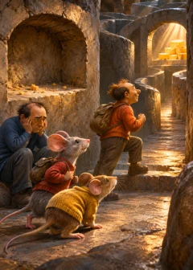
53 · چه کسی پنیر مرا جابهجا کرد؟54 · قدرت فکر مثبت55 · جادوی فکر بزرگ56 · چهار میثاق57 · تئوری انتخاب58 · زندگی خود را دوباره بیافرینید59 · جرئت داشته باش60 · شفای زندگی61 · پدر پولدار پدر بیپول62 · روانشناسی پول63 · ثروتمندترین مرد بابل64 · بیندیشید و ثروتمند شوید65 · اسرار ذهن میلیونر66 · از خوب به عالی
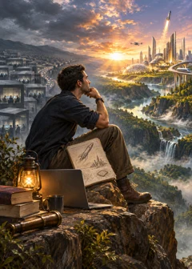
67 · صفر به یک68 · استارتاپ ناب69 · بازاریابی چریکی70 · گاو بنفش71 · بازاریابی اجازهای72 · این است بازاریابی73 · استراتژی اقیانوس آبی74 · با چرا شروع کنید75 · رهبران آخر غذا میخورند76 · کفشباز77 · سختی کارهای سخت78 · کار عمیق79 · هفته کاری چهار ساعته80 · مدیر یک دقیقهای
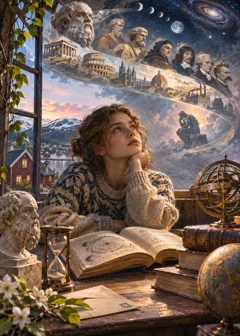
81 · دنیای سوفی82 · تسلیبخشیهای فلسفه83 · چنین گفت زرتشت84 · فراسوی نیک و بد
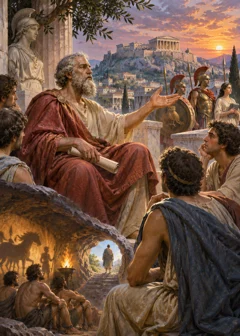
85 · جمهوری افلاطون
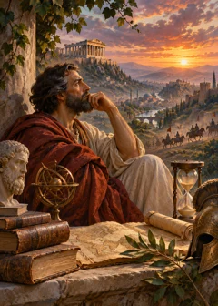
86 · تأملات87 · انسان خردمند
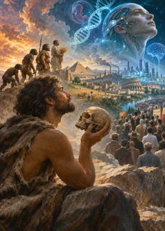
88 · انسان خداگونه89 · ۲۱ درس برای قرن ۲۱90 · اسلحه میکروب و فولاد91 · تاریخ مختصر جهان
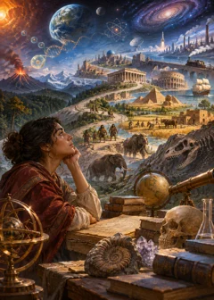
92 · تاریخچه تقریباً همه چیز93 · تاریخ بیهقی94 · دو قرن سکوت95 · ایران بین دو انقلاب
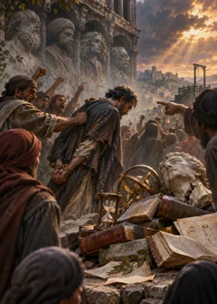
96 · جامعهشناسی نخبهکشی97 · چرا ملتها شکست میخورند98 · راه باریک آزادی99 · شرق بهشت
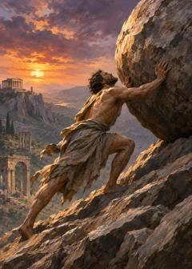
100 · افسانه سیزیف101 · قصههای مجید102 · قصههای خوب برای بچههای خوب103 · قصههای من و بابام104 · ماهی سیاه کوچولو
123 · هری پاتر و زندانی آزکابان124 · هری پاتر و جام آتش
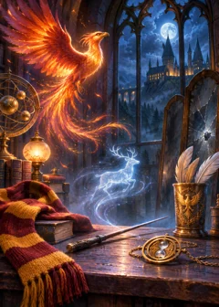
125 · هری پاتر و محفل ققنوس126 · هری پاتر و شاهزاده دورگه127 · هری پاتر و یادگاران مرگ128 · هابیت129 · یاران حلقه130 · دو برج131 · بازگشت پادشاه132 · بازی تاج و تخت133 · نبرد پادشاهان134 · طوفان شمشیرها135 · تلماسه
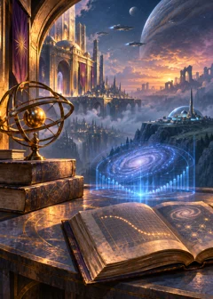
136 · بنیاد137 · من ربات138 · راهنمای مسافران مجانی کهکشان139 · پرسی جکسون و دزد آذرخش140 · بازیهای گرسنگی141 · شاهنامه فردوسی142 · دیوان حافظ143 · بوستان سعدی144 · گلستان سعدی145 · مثنوی معنوی146 · دیوان شمس147 · رباعیات خیام148 · منطقالطیر149 · هفت پیکر150 · خسرو و شیرین151 · لیلی و مجنون152 · دیوان پروین اعتصامی153 · هشت کتاب154 · تولدی دیگر155 · هوای تازه156 · زمستان157 · گزینه اشعار قیصر امینپور158 · یکی بود یکی نبود159 · مدیر مدرسه160 · کلیدر161 · تاریخچه زمان162 · طرح بزرگ
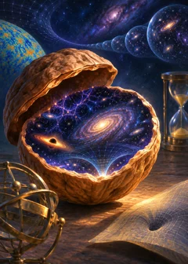
163 · جهان در پوست گردو164 · پاسخهای کوتاه به پرسشهای بزرگ
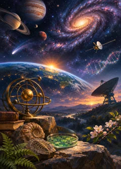
165 · کیهان
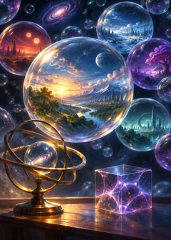
166 · جهانهای موازی167 · فیزیک ناممکنها168 · آینده ذهن169 · ژن خودخواه170 · منشأ انواع171 · حیات چیست؟172 · شش قطعه آسان173 · ساختار انقلابهای علمی174 · تفکر سریع و کند175 · نویز176 · واقعیت177 · مغز داستان شما178 · زندگی پنهان درختان179 · بدن راهنمای ساکنان180 · هفت درس کوتاه درباره فیزیک181 · آیین دوستیابی182 · آیین سخنرانی183 · هرگز سازش نکنید184 · چگونه با هر کسی صحبت کنیم
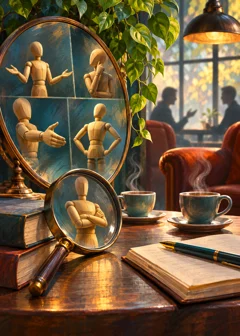
185 · زبان بدن186 · پنج زبان عشق187 · مردان مریخی زنان ونوسی188 · محکم در آغوشم بگیر189 · هوش هیجانی190 · هوش اجتماعی191 · فرزندپروری باکفایت192 · کودک خانواده انسان193 · مغز کودک من194 · تربیت بدون فریاد195 · هنر شفاف اندیشیدن196 · هنر خوب زندگی کردن197 · اصلگرایی198 · چهار هزار هفته199 · مینیمالیسم دیجیتال200 · یک چیز201 · Beloved202 · My Sister’s Keeper203 · Foundation and Empire204 · The Mysterious Affair at Styles205 · The Lion, the Witch and the Wardrobe206 · The Better Angels of Our Nature207 · Give and Take208 · The Tipping Point209 · Carrie210 · So Good They Can’t Ignore You211 · The Stranger212 · Sense and Sensibility213 · The Last Letter from Your Lover214 · Childhood’s End215 · A Study in Scarlet216 · The Sea of Monsters217 · The Blind Watchmaker218 · Drive219 · The Gifts of Imperfection220 · Salem’s Lot221 · Steal Like an Artist
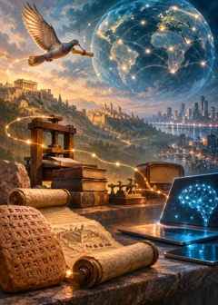
222 · Nexus223 · Oliver Twist224 · Beartown
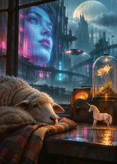
225 · Do Androids Dream of Electric Sheep?226 · A Time to Kill
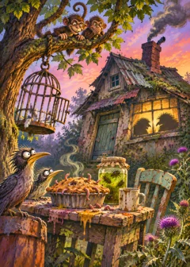
227 · The Twits228 · Pale Blue Dot229 · The 4-Hour Body230 · Mindset231 · The Shining232 · How to Stop Worrying and Start Living233 · The Plague234 · Middlemarch235 · Tuesdays with Morrie236 · The Left Hand of Darkness237 · Digital Fortress238 · Five on a Treasure Island239 · Black Holes and Baby Universes
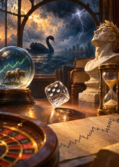
240 · Fooled by Randomness241 · The Happiness Project242 · The Stand243 · A World Without Email244 · Sapiens: A Graphic History245 · Tess of the d’Urbervilles246 · The Humans247 · Fahrenheit 451248 · Tell No One249 · Eleanor & Park250 · The Elegant Universe251 · Moneyball252 · The Obstacle Is the Way253 · The Dead Zone254 · Show Your Work!
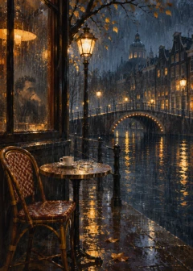
255 · The Fall256 · The Portrait of a Lady
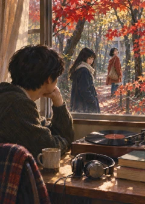
257 · Norwegian Wood258 · Kindred259 · Sharp Objects260 · Prince Caspian261 · Astrophysics for People in a Hurry262 · Same as Ever263 · Grit264 · Firestarter265 · The Quick and Easy Way to Effective Speaking266 · The Rebel267 · The Age of Innocence268 · The Remains of the Day269 · Stranger in a Strange Land270 · The Girl on the Train271 · The Titan’s Curse272 · The Man Who Mistook His Wife for a Hat273 · Thinking in Bets274 · Influence275 · Cujo276 · Slow Productivity277 · A Happy Death278 · Mrs Dalloway279 · The Handmaid’s Tale
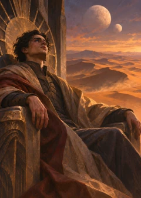
280 · Dune Messiah
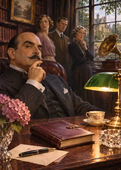
281 · The Murder of Roger Ackroyd282 · Fantastic Mr Fox283 · Complications284 · The Infinite Game285 · Focus286 · Christine287 · Keep Going288 · Exile and the Kingdom289 · Dubliners290 · White Teeth291 · The Silmarillion292 · The Sign of the Four
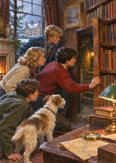
293 · Five Go Adventuring Again294 · The Emperor of All Maladies295 · Tribes296 · The Art of Seduction297 · Pet Sematary298 · How to Become a Straight-A Student299 · The Picture of Dorian Gray300 · Half of a Yellow Sun